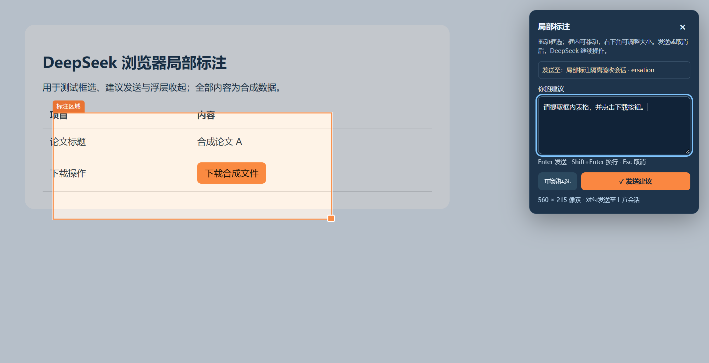
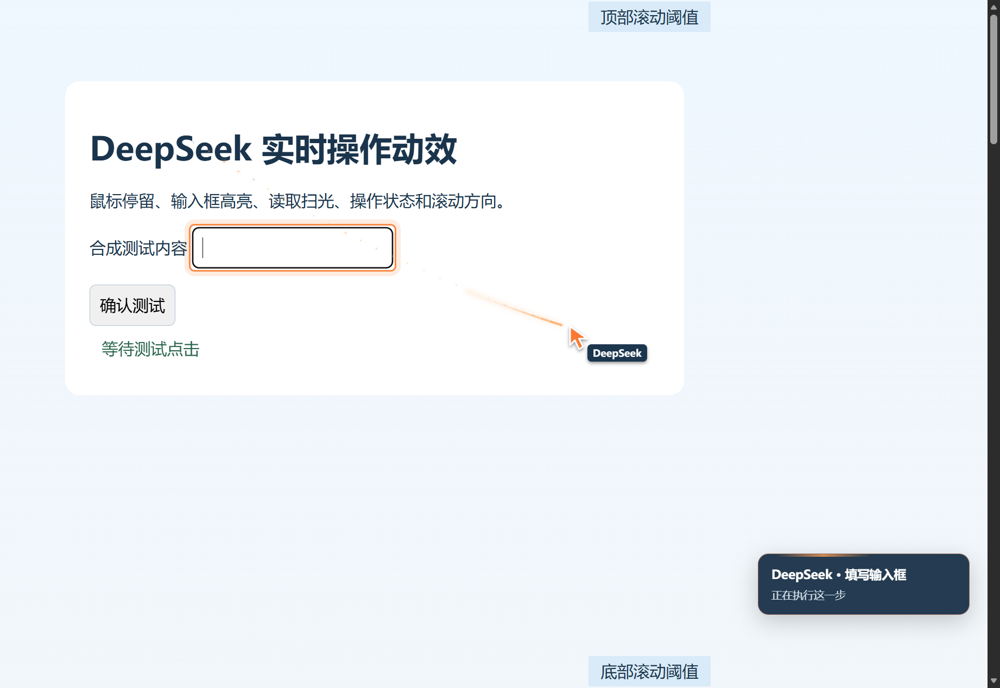
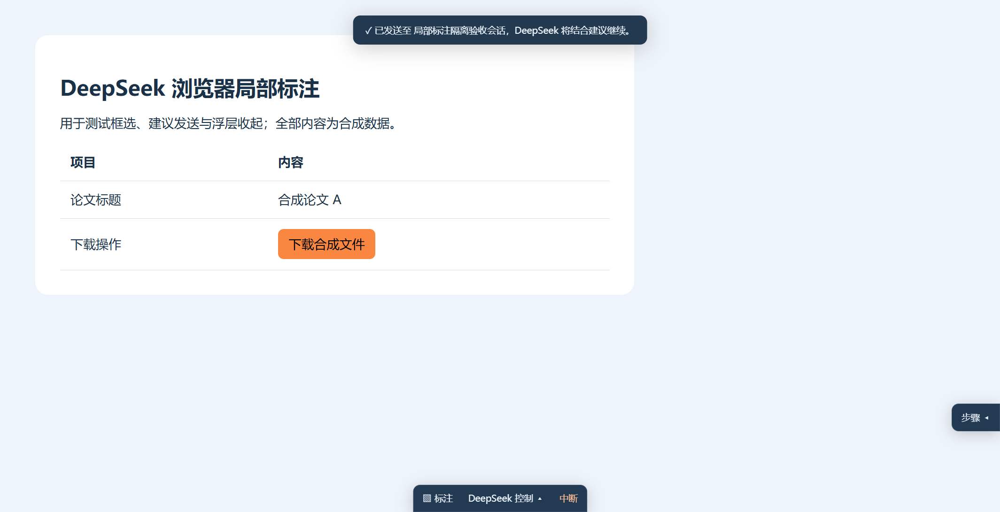

圈出位置，建议直达聊天。
拉框、移动和缩放，在面板中核对接收聊天。截图与区域定位一同发送；回答已结束的聊天也能继续。

DEEPSEEK HARNESS × YOUR EDGE
沿用你已登录的日常 Edge，在后台完成网页任务。看见指针和操作状态，框出需要调整的区域，把建议直接交给当前聊天。
Windows x64 · BrowserSkill 0.3.3 · MIT 开源
网页读取、数据整理和重复点击，交给助手。
界面示意 · 实际动作由浏览器命令驱动
A SHARED BROWSER WORKSPACE
你能知道 AI 正在做什么，
也能在关键位置给出下一步建议。
拉框、移动和缩放，在面板中核对接收聊天。截图与区域定位一同发送；回答已结束的聊天也能继续。

指针停留、弧形渐变彗尾、点击波纹、目标高亮与状态卡。无需抢占你手里的鼠标。

步骤卡收至右侧，控制条收至底部。仍能标注、中断或展开，任务页面自动静音。

以上产品截图均来自合成测试页面，不包含真实账号或聊天内容。
GET STARTED
先安装并初始化 Edge 和 DeepSeek Harness Desktop，配置好模型。完整包提供扩展、接收端、运行依赖与安装回滚脚本。
查看完整安装说明 ↗MAKE YOUR POINT
先在 Harness 选中接收聊天，再回到任务网页。
中文选词不会误发，长按 Enter 不会重复提交。
打开组合键可在 edge://extensions/shortcuts 自定义。
BEFORE YOU START
不会。网站现有登录由 Edge 使用。扩展具有网页调试与操作权限，标注会把你选择的画面和建议发给所配置的模型；请只发送适合提供给该模型的内容。
这是基于 Tencent BrowserSkill 的社区定制，保留上游 MIT 许可。它不包含 Codex 私有插件，Edge 与 Harness 主程序需要自行安装。
它连接日常浏览器配置，复用该配置的网站状态。遇到验证码、短信或扫码时，由智能体请求人工接手，人在同一页面完成后交还控制。
面板显示 Harness 当前选中聊天的名称和 ID 尾号。目标缺失、多个窗口选择不一致或标注期间切换时，发送会被拒绝并保留文字。浏览器工具也按调用聊天隔离。
OPEN TO BUILD ON